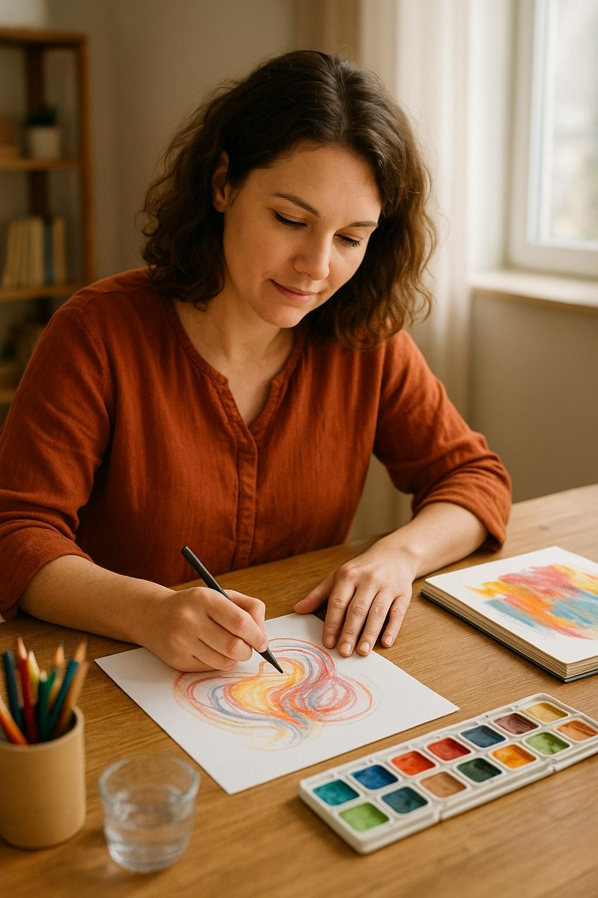
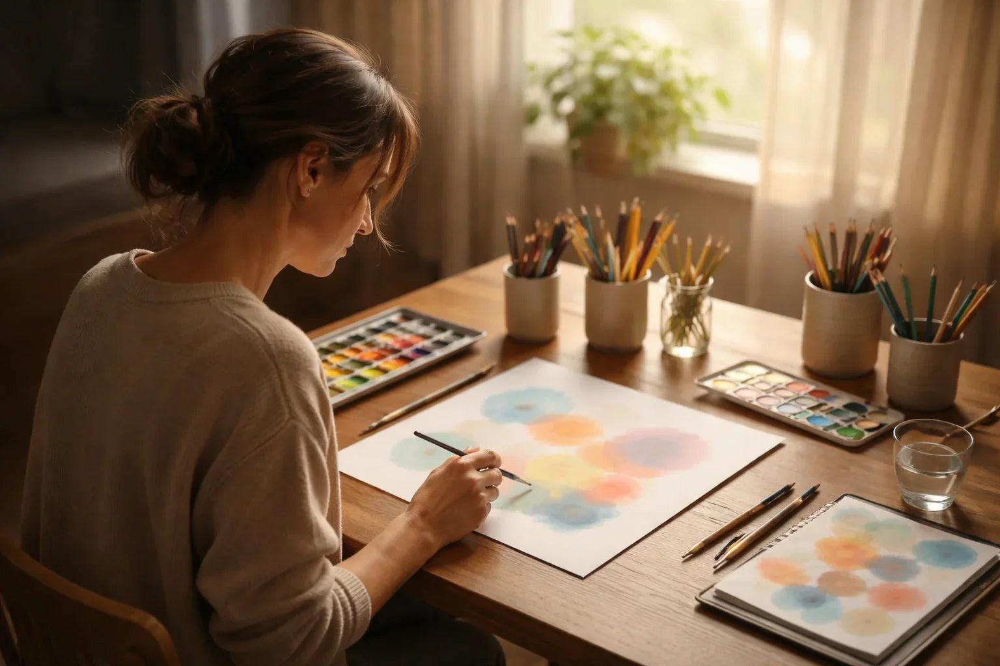
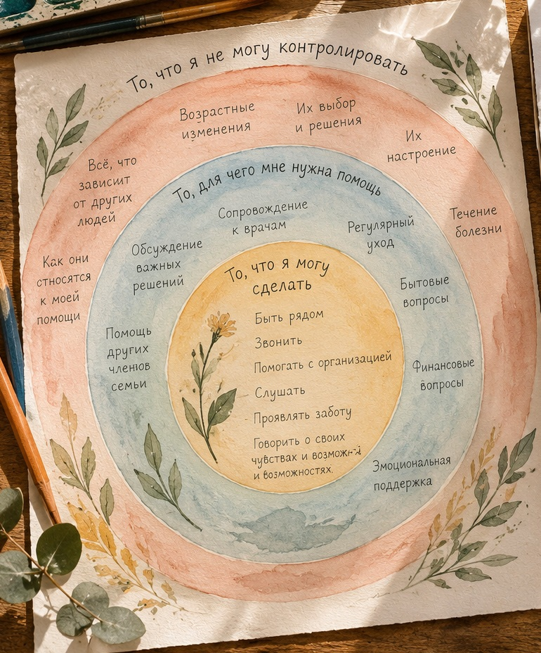
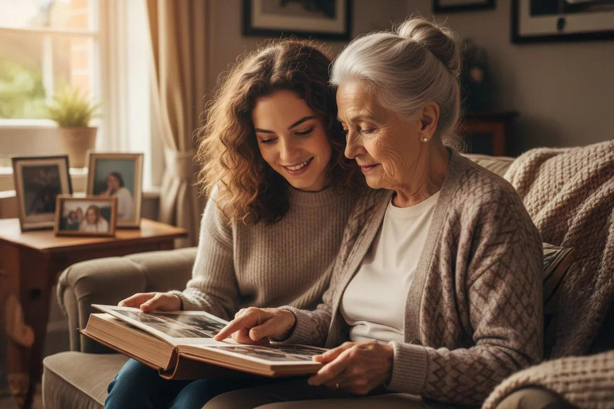
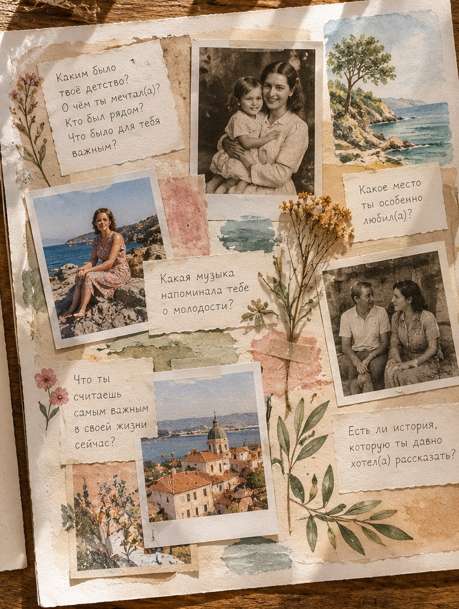

О заботе, меняющихся ролях и праве оставаться собой.
Мои родители стареют и нуждаются во мне
Иногда мы вдруг замечаем, что наши родители стали старше. И отношения, которые казались привычными, начинают меняться.
Возможно, мама стала чаще просить о помощи. Папе стало труднее справляться с тем, что раньше он делал самостоятельно. Появились разговоры о врачах, лекарствах, повседневных делах, безопасности. И вместе с заботой возникает много разных чувств.
Мы можем любить родителей и тревожиться за них. Можем хотеть помочь и одновременно уставать. Можем раздражаться, чувствовать вину, скучать по прежним отношениям или бояться будущего.
Эти чувства могут существовать одновременно. И ни одно из них не отменяет вашей любви.
А где во всём этом вы?
Когда близким нужна помощь, бывает трудно заметить собственные потребности. Кажется, что нужно справляться, быть сильным, всё предусмотреть. Но забота о родителях не должна означать отказ от собственной жизни.
Можно быть рядом, не контролируя всё. Можно просить о помощи. Можно сохранять отношения, в которых есть не только обязанности, но и интерес друг к другу.
Ниже — три практики. Они помогут исследовать свои чувства, увидеть границы ответственности и найти пространство для семейной истории, которая больше повседневных забот.
Материалы и практики
Выберите ту, которая откликается сегодня. Здесь нет правильного рисунка и правильных ответов.

1. Все мои чувства имеют место
15–20 минут · Индивидуально · краски, пастель или цветные карандаши
Иногда мы запрещаем себе испытывать определённые чувства по отношению к родителям. Но чувства не делают нас плохими детьми. Они рассказывают о том, что происходит внутри нас.
Открыть практику
Что понадобится
Лист бумаги, цветные карандаши, пастель или краски.
Как выполнять
Положите перед собой лист и обратите внимание на своё состояние.
Подумайте об отношениях с родителями такими, какие они сейчас. Не ищите правильных ответов.
Выберите цвета, которые соответствуют вашим чувствам: тревоге, нежности, усталости, злости, благодарности или чему-то ещё.
Позвольте цветам и линиям появляться на бумаге. Это могут быть пятна, формы, линии или целая композиция.
Посмотрите на рисунок: какие чувства занимают больше пространства? Какие почти незаметны?
Если хочется, добавьте цвет, символизирующий поддержку, необходимую вам сейчас.

Вопросы для размышления
Какое чувство оказалось самым заметным?
Есть ли чувство, которое мне трудно себе разрешить?
О какой моей потребности могут говорить эти чувства?
Что могло бы немного облегчить моё состояние?
Маленькое открытие
Любовь не требует, чтобы мы перестали чувствовать всё остальное.

2. Круг моей ответственности
20 минут · Индивидуально · акварель и цветные карандаши
Когда родители стареют, мы иногда начинаем чувствовать ответственность буквально за всё. Эта практика помогает увидеть, что действительно зависит от вас, где нужна помощь и что невозможно контролировать.
Открыть практику
Что понадобится
Большой лист бумаги, краски и карандаши трёх цветов.
Как выполнять
Нарисуйте три круга один внутри другого. Не стремитесь к геометрической точности: это живой рисунок.
Внутренний круг — «То, что я могу сделать». Впишите конкретные действия в пределах ваших возможностей: позвонить, поговорить, помочь с организацией помощи.
Средний круг — «То, для чего мне нужна помощь». Здесь могут оказаться сопровождение к врачам, регулярный уход, бытовые вопросы и задачи, которые стоит разделить.
Внешний круг — «То, что я не могу контролировать». Например, возрастные изменения, течение болезни, некоторые решения родителей или их настроение.
Посмотрите на рисунок целиком. Возможно, вы заметите, что пытались отвечать за то, что находится во внешнем круге.
Вопросы для размышления
За что я беру слишком много ответственности?
Когда мне трудно попросить помощи?
Что я пытаюсь контролировать из страха?
Какие решения важно оставить самим родителям?
Какую одну задачу я мог(ла) бы разделить с кем-то?
Маленькое открытие
Забота становится устойчивее, когда в ней есть место не только для потребностей другого человека, но и для наших собственных.

3. То, что я хочу успеть спросить
30 минут и более · Индивидуально или вместе с родителями · фотографии, карандаши, краски, коллаж
Мы часто знаем своих родителей прежде всего как маму и папу. Но когда-то они были детьми и молодыми людьми со своими мечтами, друзьями и историями. Эта практика приглашает узнать друг друга по-новому.
Открыть практику
Что понадобится
Семейные фотографии, бумага, карандаши, краски, клей, вырезки из журналов. Если фотографий нет, подойдут рисунки, слова или записи.
Как выполнять
Выберите вопросы. Что вам интересно узнать? Например: «Каким было твоё детство?», «О чём ты мечтал(а) в двадцать лет?», «Какая музыка напоминает тебе о молодости?», «Какое место ты особенно любил(а)?»
Создайте пространство для истории. Если возможно, вместе посмотрите фотографии или поговорите за чашкой чая. Не превращайте разговор в обязательное интервью.
Создайте страницу памяти. На листе соедините фотографии, акварельные рисунки, рукописные фразы и небольшие детали, которые хочется сохранить.
Добавьте что-то своё. Может быть, история напомнит о вашем детстве или откроет неожиданное сходство между вами.

Если поговорить с родителями сейчас невозможно, выберите воспоминание или фотографию и создайте коллаж самостоятельно. Необязательно заполнять все пробелы в истории.
Вопросы для размышления
Что нового я узнал(а) о своём родителе?
Что меня удивило?
Какие чувства возникли во время разговора?
О чём мне хотелось бы поговорить ещё?
Как сохранять близость не только через помощь и обязанности?
Маленькое открытие
Близость — это не только знать, что происходит с человеком сегодня. Это ещё и интересоваться тем, каким был его путь.
Мои маленькие открытия
Здесь можно записать несколько мыслей после любой практики. Чтобы сохранить их, скопируйте текст в свои заметки.
Индивидуальная поддержка
Если хочется поговорить о тревоге, усталости, чувстве вины или меняющихся отношениях с родителями, можно обратиться за поддержкой к специалисту.